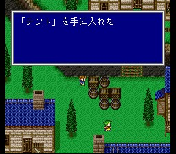
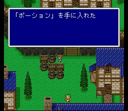
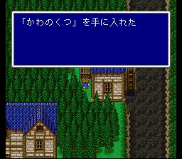
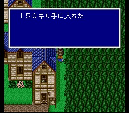
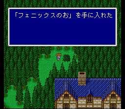
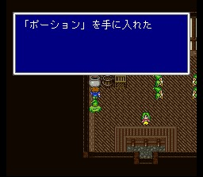
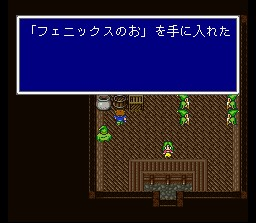
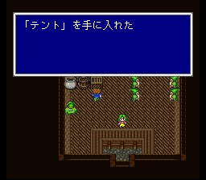

툴 마을
이 마을에 처음 도착하면 해적들과 파리스가 술집으로 몰려가 버리고, 여관에 들어가면 자고 있는 파리스에게 남정네 둘이 헤까닥하는 이벤트를 볼 수 있습니다.(진행에 필수)
마을에는 알게 모르게 아이템들이 많이 숨어 있으니 챙깁시다.(본격적인
날강도 모드 발동!)

마을 서쪽편에는 초보 플레이어들을 위한 '초심자의 관'이 있습니다. 여기서는
게임 진행에 대한 여러 가지를 배울 수 있으며 아이템도 몇 가지 얻을 수 있습니다.
그 중 하나는 적이 나오지만, '발로 해도 이기는' 그 고블린이니 대략 안심입니다.

툴에서는 다음과 같은 아이템들을 팔고 있습니다.
도구상: 포션, 텐트
무기상: 브로드스워드, 로드, 지팡이
방어구상: 가죽방패,
가죽모자, 가죽옷
마법상: 흑마법 Lv1, 백마법 Lv2
무기나 방어구를 사려고 하면 어떻게 알았는지 파리스가 잽싸게 달려와
매매에 참여하는 모습을 보여줍니다.
브로드스워드는 두 개만 더 사서 나중에
바람의 신전에서 전원장비를 하면 보스전을 쉽게 치룰 수 있습니다. 나머지는 별
필요 없으니 다음에 다시 옵시다.
북쪽에는 레나의 지인인 조카의 집이 있으나 지금은 아무도 없습니다.
마을을 나가면 파리스가 달려와서 합류합니다. 바람의 신전으로 향합시다.